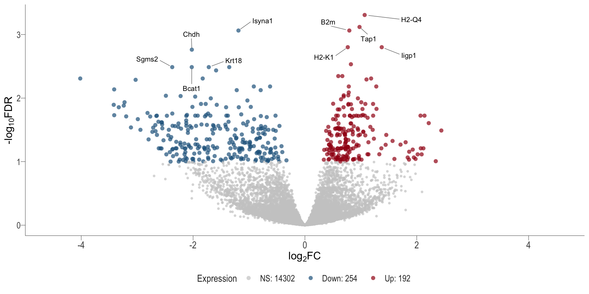
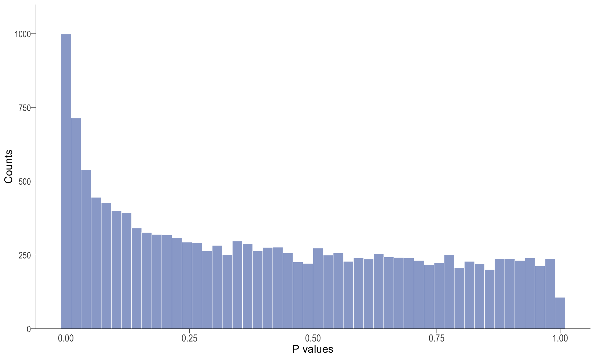
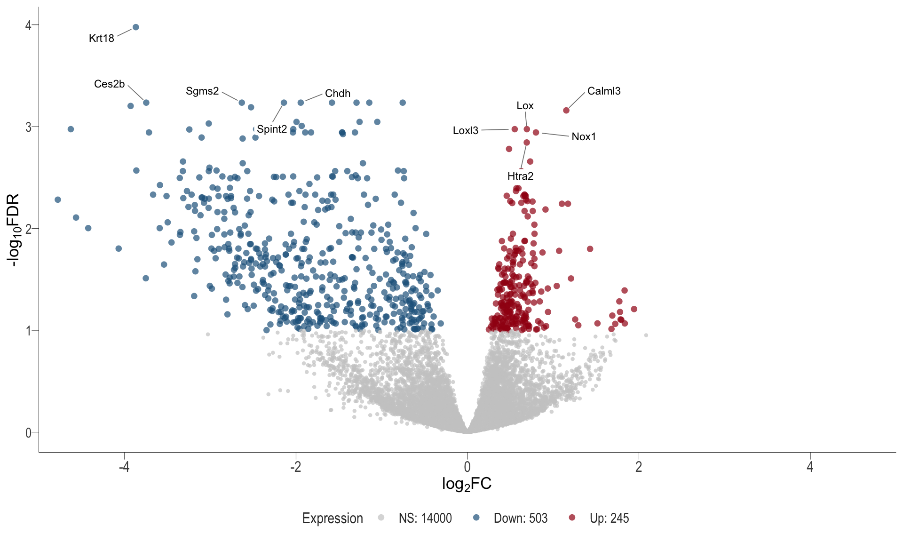

DGE Analysis
Ha Tran
08-01-2024
Last updated: 2024-01-13
Checks: 7 0
Knit directory: 4_Treg_uNK/1_analysis/
This reproducible R Markdown analysis was created with workflowr (version 1.7.1). The Checks tab describes the reproducibility checks that were applied when the results were created. The Past versions tab lists the development history.
Great! Since the R Markdown file has been committed to the Git repository, you know the exact version of the code that produced these results.
Great job! The global environment was empty. Objects defined in the global environment can affect the analysis in your R Markdown file in unknown ways. For reproduciblity it’s best to always run the code in an empty environment.
The command set.seed(12345) was run prior to running the
code in the R Markdown file. Setting a seed ensures that any results
that rely on randomness, e.g. subsampling or permutations, are
reproducible.
Great job! Recording the operating system, R version, and package versions is critical for reproducibility.
Nice! There were no cached chunks for this analysis, so you can be confident that you successfully produced the results during this run.
Great job! Using relative paths to the files within your workflowr project makes it easier to run your code on other machines.
Great! You are using Git for version control. Tracking code development and connecting the code version to the results is critical for reproducibility.
The results in this page were generated with repository version a957cff. See the Past versions tab to see a history of the changes made to the R Markdown and HTML files.
Note that you need to be careful to ensure that all relevant files for
the analysis have been committed to Git prior to generating the results
(you can use wflow_publish or
wflow_git_commit). workflowr only checks the R Markdown
file, but you know if there are other scripts or data files that it
depends on. Below is the status of the Git repository when the results
were generated:
Ignored files:
Ignored: .Rproj.user/
Untracked files:
Untracked: .gitignore
Untracked: 0_data/rds_objects/reactome.rds
Untracked: 0_data/rds_objects/reactome_all.rds
Untracked: 0_data/rds_objects/reactome_sig.rds
Untracked: 2_plots/3_FA/kegg/combine_kegg_dot.svg
Untracked: 2_plots/3_FA/kegg/heat_DT vs PBS_Antigen processing and presentation.svg
Untracked: 2_plots/3_FA/kegg/heat_DT vs PBS_Natural killer cell mediated cytotoxicity.svg
Untracked: 2_plots/3_FA/kegg/heat_DT vs PBS_Phagosome.svg
Untracked: 2_plots/3_FA/kegg/heat_DT vs PBS_Th1 and Th2 cell differentiation.svg
Untracked: 2_plots/3_FA/kegg/heat_Treg vs DT_Antigen processing and presentation.svg
Untracked: 2_plots/3_FA/kegg/heat_Treg vs DT_Natural killer cell mediated cytotoxicity.svg
Untracked: 2_plots/3_FA/kegg/heat_Treg vs DT_Phagosome.svg
Untracked: 2_plots/3_FA/kegg/heat_Treg vs DT_Th1 and Th2 cell differentiation.svg
Untracked: 2_plots/3_FA/kegg/heat_Treg vs PBS_Antigen processing and presentation.svg
Untracked: 2_plots/3_FA/kegg/heat_Treg vs PBS_Natural killer cell mediated cytotoxicity.svg
Untracked: 2_plots/3_FA/kegg/heat_Treg vs PBS_Phagosome.svg
Untracked: 2_plots/3_FA/kegg/heat_Treg vs PBS_Th1 and Th2 cell differentiation.svg
Untracked: 2_plots/3_FA/kegg/kegg_dot_DT vs PBS.svg
Untracked: 2_plots/3_FA/kegg/kegg_dot_Treg vs DT.svg
Untracked: 2_plots/3_FA/kegg/kegg_dot_Treg vs PBS.svg
Untracked: 2_plots/3_FA/kegg/kegg_upset_DT vs PBS.svg
Untracked: 2_plots/3_FA/kegg/kegg_upset_Treg vs DT.svg
Untracked: 2_plots/3_FA/kegg/kegg_upset_Treg vs PBS.svg
Untracked: 2_plots/3_FA/reactome/
Untracked: 2_plots/functionalHeat.svg
Untracked: 2_plots/functionalHeat_DT vs PBS.svg
Untracked: 2_plots/functionalHeat_Treg vs DT.svg
Untracked: 2_plots/functionalHeat_legend.svg
Unstaged changes:
Modified: 0_data/rds_objects/comp.rds
Modified: 0_data/rds_objects/dge.rds
Modified: 0_data/rds_objects/enrichGO.rds
Modified: 0_data/rds_objects/enrichGO_sig.rds
Modified: 0_data/rds_objects/enrichKEGG.rds
Modified: 0_data/rds_objects/enrichKEGG_all.rds
Modified: 0_data/rds_objects/enrichKEGG_sig.rds
Modified: 0_data/rds_objects/lm.rds
Modified: 0_data/rds_objects/lm_all.rds
Modified: 0_data/rds_objects/lm_sig.rds
Modified: 1_analysis/_site.yml
Deleted: 1_analysis/gsea.Rmd
Modified: 2_plots/1_QC/counts_after_filtering.svg
Modified: 2_plots/1_QC/counts_before_after_filtering.svg
Modified: 2_plots/1_QC/counts_before_filtering.svg
Modified: 2_plots/1_QC/library_size.svg
Modified: 2_plots/2_DE/heat_DT vs PBS.svg
Modified: 2_plots/2_DE/heat_Treg vs DT.svg
Modified: 2_plots/2_DE/heat_Treg vs PBS.svg
Modified: 2_plots/2_DE/heat_combined.svg
Modified: 2_plots/2_DE/hist_DT vs PBS.svg
Modified: 2_plots/2_DE/hist_Treg vs DT.svg
Modified: 2_plots/2_DE/hist_Treg vs PBS.svg
Modified: 2_plots/2_DE/ma_DT vs PBS.png
Modified: 2_plots/2_DE/ma_Treg vs DT.png
Modified: 2_plots/2_DE/ma_Treg vs PBS.png
Modified: 2_plots/2_DE/venn.png
Modified: 2_plots/2_DE/vol_DT vs PBS.png
Modified: 2_plots/2_DE/vol_Treg vs DT.png
Modified: 2_plots/2_DE/vol_Treg vs PBS.png
Modified: 2_plots/3_FA/kegg/venn.png
Modified: 2_plots/sampleHeat.svg
Modified: 3_output/GO_sig.xlsx
Modified: 3_output/KEGG_all.xlsx
Modified: 3_output/KEGG_sig.xlsx
Modified: 3_output/de_genes_all.xlsx
Modified: 3_output/de_genes_sig.xlsx
Modified: 3_output/reactome_all.xlsx
Modified: 3_output/reactome_sig.xlsx
Note that any generated files, e.g. HTML, png, CSS, etc., are not included in this status report because it is ok for generated content to have uncommitted changes.
These are the previous versions of the repository in which changes were
made to the R Markdown (1_analysis/deAnalysis.Rmd) and HTML
(docs/deAnalysis.html) files. If you’ve configured a remote
Git repository (see ?wflow_git_remote), click on the
hyperlinks in the table below to view the files as they were in that
past version.
| File | Version | Author | Date | Message |
|---|---|---|---|---|
| Rmd | a957cff | Ha Manh Tran | 2024-01-13 | workflowr::wflow_publish(here::here("1_analysis/*Rmd")) |
| Rmd | 221e2fa | tranmanhha135 | 2024-01-10 | fixed error |
| html | 221e2fa | tranmanhha135 | 2024-01-10 | fixed error |
| html | 762020e | tranmanhha135 | 2024-01-09 | Build site. |
| Rmd | c6d389f | tranmanhha135 | 2024-01-09 | workflowr::wflow_publish(here::here("1_analysis/*.Rmd")) |
| Rmd | f2e3750 | tranmanhha135 | 2024-01-08 | completed DE |
| Rmd | 05fa0b3 | tranmanhha135 | 2024-01-06 | added description |
Data Setup
# working with data
library(readxl)
library(dplyr)
library(magrittr)
library(readr)
library(tibble)
library(reshape2)
library(tidyverse)
library(ComplexHeatmap)
library(scales)
library(plyr)
# Visualisation:
library(kableExtra)
library(ggplot2)
library(grid)
library(pander)
library(cowplot)
library(pheatmap)
library(VennDiagram)
library(DT)
library(patchwork)
library(kableExtra)
library(extrafont)
loadfonts(device = "all")
# Custom ggplot
library(ggplotify)
library(ggpubr)
library(ggrepel)
library(viridis)
# Bioconductor packages:
library(edgeR)
library(limma)
library(Glimma)
library(pandoc)
library(knitr)
opts_knit$set(progress = FALSE, verbose = FALSE)
opts_chunk$set(warning=FALSE, message=FALSE, echo=FALSE)Import DGElist Data
DGElist object containing the raw feature count, sample metadata, and gene metadata, created in the Set Up stage.
Initial Parameterisation
The varying methods used to identify differential expression all rely on similar initial parameters. These include:
The Design Matrix,
Estimation of Dispersion, and
Contrast Matrix
Design Matrix
The experimental design can be parameterised in a one-way layout where one coefficient is assigned to each group. The design matrix formulated below contains the predictors of each sample
Contrast Matrix
The contrast matrix is required to provide a coefficient to each comparison and later used to test for significant differential expression with each comparison group
Limma-Voom
Apply voom transformation
Voom is used to estimate the mean-variance relationship of the data, which is then used to calculate and assign a precision weight for each of the observation (gene). This observational level weights are then used in a linear modelling process to adjust for heteroscedasticity. Log count (logCPM) data typically show a decreasing mean-variance trend with increasing count size (expression).
However, for some dataset with potential sample outliers,
voomWithQualityWeights can be used to calculate
sample-specific quality weights. The application of observational and
sample-specific weights can objectively and systematically correct for
outliers and better than manually removing samples in cases where there
are no clear-cut reasons for replicate variations. Thus, linear model
will be applied to the voom transformation with observational and
sample-specific weights.
Observational level weights
Voom transformation with observational weights
Observational & group level weights
Voom transformation with observational and group-specific weights
Observational & sample level weights
Voom transformation with observational and sample-specific weights
Apply linear model
When the list of DE genes is large, we can apply a fold change
cut-off through application of TREAT to prioritise the
genes with greater fold changes and potentially more biologically
relevant. Ideally, we are aiming for ~300 genes \(\pm\) 100 genes. Functional enrichment
analysis with this number of genes should generate meaningful
results.
Importantly, the FC threshold used in TREAT should be
chosen as a small value below which results should be ignored, instead
of a target fold-change. In general, a modest fold-change of 1.1 - 1.5
is recommended. However, it is more important to select a fold-change
cut-off that generates a sufficiently small list of DE genes.
A quick aside on the definition and interpretation of fold change and
log2FC. A fold-change (FC) refers to the
ratio of two values.
- If there is a two fold increase
(
FC = 2,log2FC = 1) betweenA vs B, thenAis twice as big asB(orAis200%ofB) - If there is a two fold decrease
(
FC = 0.5,log2FC = -1) betweenA vs B, thenAis halfas big asB(orAis50%ofB)
FC=none
| DT vs PBS | Treg vs PBS | Treg vs DT | |
|---|---|---|---|
| Down | 454 | 648 | 285 |
| NotSig | 13935 | 13758 | 14148 |
| Up | 359 | 342 | 315 |
| DT vs PBS | Treg vs PBS | Treg vs DT | |
|---|---|---|---|
| Down | 254 | 503 | 60 |
| NotSig | 14302 | 14000 | 14624 |
| Up | 192 | 245 | 64 |
| DT vs PBS | Treg vs PBS | Treg vs DT | |
|---|---|---|---|
| Down | 137 | 352 | 16 |
| NotSig | 14507 | 14274 | 14703 |
| Up | 104 | 122 | 29 |
FC=1.1
| DT vs PBS | Treg vs PBS | Treg vs DT | |
|---|---|---|---|
| Down | 365 | 531 | 163 |
| NotSig | 14159 | 14049 | 14435 |
| Up | 224 | 168 | 150 |
| DT vs PBS | Treg vs PBS | Treg vs DT | |
|---|---|---|---|
| Down | 151 | 364 | 6 |
| NotSig | 14518 | 14313 | 14728 |
| Up | 79 | 71 | 14 |
| DT vs PBS | Treg vs PBS | Treg vs DT | |
|---|---|---|---|
| Down | 76 | 264 | 2 |
| NotSig | 14634 | 14445 | 14735 |
| Up | 38 | 39 | 11 |
FC=1.2
| DT vs PBS | Treg vs PBS | Treg vs DT | |
|---|---|---|---|
| Down | 263 | 427 | 95 |
| NotSig | 14376 | 14262 | 14590 |
| Up | 109 | 59 | 63 |
| DT vs PBS | Treg vs PBS | Treg vs DT | |
|---|---|---|---|
| Down | 65 | 267 | 0 |
| NotSig | 14666 | 14469 | 14748 |
| Up | 17 | 12 | 0 |
| DT vs PBS | Treg vs PBS | Treg vs DT | |
|---|---|---|---|
| Down | 14 | 177 | 0 |
| NotSig | 14730 | 14566 | 14748 |
| Up | 4 | 5 | 0 |
FC=1.3
| DT vs PBS | Treg vs PBS | Treg vs DT | |
|---|---|---|---|
| Down | 188 | 357 | 50 |
| NotSig | 14495 | 14372 | 14670 |
| Up | 65 | 19 | 28 |
| DT vs PBS | Treg vs PBS | Treg vs DT | |
|---|---|---|---|
| Down | 17 | 195 | 0 |
| NotSig | 14728 | 14552 | 14748 |
| Up | 3 | 1 | 0 |
| DT vs PBS | Treg vs PBS | Treg vs DT | |
|---|---|---|---|
| Down | 0 | 124 | 0 |
| NotSig | 14748 | 14623 | 14748 |
| Up | 0 | 1 | 0 |
Differential Gene Expression analysis
Due to the large variance in the PBS group, the transformation with
observational and group-level weights were used.
Without FC cut-off (using TREAT) and an
FDR < 0.05, the DT vs Treg comparison had
45 significant DE genes (TABLE 3). This may
not be enough DE genes to perform meaningful functional
enrichment analysis downstream. Therefore, The FDR threshold is
increased to 0.1, in another word, we allow for 10% type I
error, i.e. 1 in 10 genes may be a false positive for differential
expression. Using a fold-change cut-off through application of
TREAT gives additional stringency at the costs of reducing
the list of DE genes.
P-value histogram: illustrates the distribution of p-values. As the stringency increases (increasing FC threshold), the distribution shifts towards
1, thus insignificant.MA plot: helps visualise and identify genes with significant changes in expression. Points deviating from the central axis often indicate differentially expressed genes, allowing assessment of the magnitude and consistency of expression changes across conditions.
- \(x-axis =\) average expression, in log counts per million (CPM)
- \(y-axis =\) log fold change between conditions
Volcano plot: shows significantly differentially expressed genes appearing as points that are both statistically significant (located at the top) and have substantial fold changes (located on the left or right sides). This visualization enables identification of genes that are statistically and biologically significant.
- \(x-axis =\) log fold change between conditions
- \(y-axis =\) negative logarithm of the FDR-adjusted p-values
Heatmap: visualize gene expression patterns across different experimental conditions. Rows are genes, columns represent samples, and the colour intensity indicates the expression level of a gene in a specific sample. The genes are also clustered based on similar expression patterns, which provides insights into the overall structure and relationships within large datasets.
- These heatmaps illustrates the top 30 most significant DE genes
Venn diagram: visualises the significant DE gene overlap between the previous RNA-seq experiment and the current.
DT vs PBS
Volcano plot

Treg vs PBS
P-val histogram

Volcano plot

Treg vs DT
P-val histogram

Export Data
The following are exported:
de_genes_all.xlsx - This spreadsheet contains all DE genes.
de_genes_sig.xlsx - This spreadsheet contains only significant DE genes.
R version 4.3.1 (2023-06-16 ucrt)
Platform: x86_64-w64-mingw32/x64 (64-bit)
Running under: Windows 10 x64 (build 19045)
Matrix products: default
locale:
[1] LC_COLLATE=English_Australia.utf8 LC_CTYPE=English_Australia.utf8
[3] LC_MONETARY=English_Australia.utf8 LC_NUMERIC=C
[5] LC_TIME=English_Australia.utf8
time zone: Australia/Adelaide
tzcode source: internal
attached base packages:
[1] grid stats graphics grDevices utils datasets methods
[8] base
other attached packages:
[1] knitr_1.45 pandoc_0.2.0 Glimma_2.10.0
[4] edgeR_3.42.4 limma_3.56.2 viridis_0.6.4
[7] viridisLite_0.4.2 ggrepel_0.9.4 ggpubr_0.6.0
[10] ggplotify_0.1.2 extrafont_0.19 patchwork_1.1.3
[13] DT_0.31 VennDiagram_1.7.3 futile.logger_1.4.3
[16] pheatmap_1.0.12 cowplot_1.1.2 pander_0.6.5
[19] kableExtra_1.3.4 plyr_1.8.9 scales_1.3.0
[22] ComplexHeatmap_2.16.0 lubridate_1.9.3 forcats_1.0.0
[25] stringr_1.5.1 purrr_1.0.2 tidyr_1.3.0
[28] ggplot2_3.4.4 tidyverse_2.0.0 reshape2_1.4.4
[31] tibble_3.2.1 readr_2.1.4 magrittr_2.0.3
[34] dplyr_1.1.4 readxl_1.4.3
loaded via a namespace (and not attached):
[1] RColorBrewer_1.1-3 rstudioapi_0.15.0
[3] jsonlite_1.8.8 shape_1.4.6
[5] magick_2.8.2 farver_2.1.1
[7] rmarkdown_2.25 zlibbioc_1.46.0
[9] GlobalOptions_0.1.2 fs_1.6.3
[11] vctrs_0.6.5 memoise_2.0.1
[13] RCurl_1.98-1.13 rstatix_0.7.2
[15] webshot_0.5.5 S4Arrays_1.0.6
[17] htmltools_0.5.7 lambda.r_1.2.4
[19] broom_1.0.5 cellranger_1.1.0
[21] gridGraphics_0.5-1 sass_0.4.8
[23] bslib_0.6.1 htmlwidgets_1.6.4
[25] futile.options_1.0.1 cachem_1.0.8
[27] whisker_0.4.1 lifecycle_1.0.4
[29] iterators_1.0.14 pkgconfig_2.0.3
[31] Matrix_1.6-4 R6_2.5.1
[33] fastmap_1.1.1 MatrixGenerics_1.12.3
[35] GenomeInfoDbData_1.2.10 clue_0.3-65
[37] digest_0.6.33 colorspace_2.1-0
[39] S4Vectors_0.38.2 DESeq2_1.40.2
[41] rprojroot_2.0.4 crosstalk_1.2.1
[43] GenomicRanges_1.52.1 labeling_0.4.3
[45] fansi_1.0.6 timechange_0.2.0
[47] httr_1.4.7 abind_1.4-5
[49] compiler_4.3.1 here_1.0.1
[51] withr_2.5.2 doParallel_1.0.17
[53] backports_1.4.1 BiocParallel_1.34.2
[55] carData_3.0-5 highr_0.10
[57] Rttf2pt1_1.3.12 ggsignif_0.6.4
[59] rappdirs_0.3.3 DelayedArray_0.26.7
[61] rjson_0.2.21 tools_4.3.1
[63] httpuv_1.6.13 extrafontdb_1.0
[65] glue_1.6.2 promises_1.2.1
[67] cluster_2.1.4 generics_0.1.3
[69] gtable_0.3.4 tzdb_0.4.0
[71] hms_1.1.3 XVector_0.40.0
[73] xml2_1.3.6 car_3.1-2
[75] utf8_1.2.4 BiocGenerics_0.46.0
[77] foreach_1.5.2 pillar_1.9.0
[79] yulab.utils_0.1.1 later_1.3.2
[81] circlize_0.4.15 lattice_0.21-8
[83] tidyselect_1.2.0 locfit_1.5-9.8
[85] git2r_0.33.0 gridExtra_2.3
[87] IRanges_2.34.1 SummarizedExperiment_1.30.2
[89] svglite_2.1.3 stats4_4.3.1
[91] xfun_0.39 Biobase_2.60.0
[93] matrixStats_1.2.0 stringi_1.8.3
[95] workflowr_1.7.1 yaml_2.3.7
[97] evaluate_0.23 codetools_0.2-19
[99] cli_3.6.1 systemfonts_1.0.5
[101] munsell_0.5.0 jquerylib_0.1.4
[103] Rcpp_1.0.11 GenomeInfoDb_1.36.4
[105] png_0.1-8 parallel_4.3.1
[107] ellipsis_0.3.2 bitops_1.0-7
[109] writexl_1.4.2 crayon_1.5.2
[111] GetoptLong_1.0.5 rlang_1.1.1
[113] rvest_1.0.3 formatR_1.14